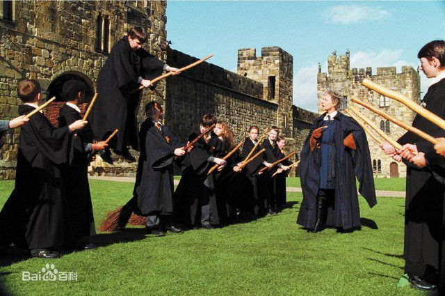
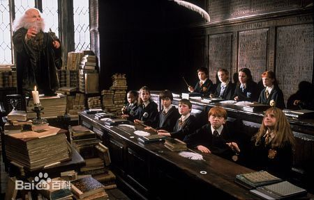
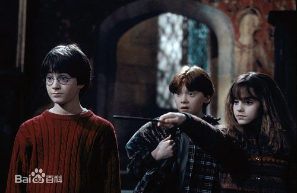
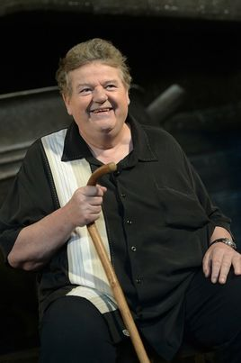
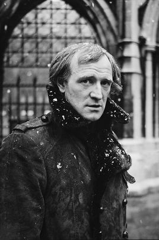

丹尼尔·雷德克里夫
饰 哈利·波特
艾玛·沃特森
饰 赫敏·格兰杰
鲁伯特·格林特
饰 罗恩·韦斯莱
罗彼·考特拉尼
饰 鲁伯·海格
理查德·哈里斯
饰 阿不思·邓布利多
影片《哈利·波特与魔法石》改编于英国畅销作家J·K·罗琳同名小说。电影的剧本是由斯蒂芬·科洛弗所编，克里斯·哥伦布执导，丹尼尔·雷德克里夫、鲁伯特·格林特、艾玛·沃特森、理查德·哈里斯和伊安·哈特等联袂出演。影片于2001年11月16日在美国上映。 电影讲述从小父母双亡的小男孩哈利·波特是魔法师的后代。他的父母都被一个魔法界的坏巫师所杀，然而当坏巫师也企图杀死哈利波特时却被一种巨大的力量给阻止，哈利波特因此得以幸存。之后他与阿姨一家人同住，而且被送往魔法师学校就读，发生许多有趣又不可思议的经历
  | 中文名 | 哈利·波特与魔法石 |
| 外文名 | Harry Potter and the Sorcerer's Stone |
| 导演 | 克里斯·哥伦布 |
| 编剧 | 史蒂夫·克洛夫斯 / J·K·罗琳 |
| 主演 | 丹尼尔·雷德克里夫 / 艾玛·沃森 / 鲁伯特·格林特 / 艾伦·瑞克曼 / 玛吉·史密斯 |
| 类型 | 奇幻 / 冒险 |
| 官方网站 | www.harrypotter.co.uk |
| 出品公司 | 华纳兄弟影片公司， 盛日影业公司 |
| 发行公司 | 华纳兄弟影片公司 |
| 制片地区 | 美国，英国 |
| 制片成本 | 1.3亿美元 |
| 拍摄日期 | 2000年9月至2001年7月 |
| 上映日期 | 2002-01-26(中国大陆) / 2001-11-04(英国首映) / 2001-11-16(美国) |
| 片长 | 152分钟 / 159分钟(加长版) |
从小寄养在姨丈家里的哈利·波特，饱受姨丈一家人的歧视与欺侮，然而就在11岁生日那天，哈利·波特得知了自己的身世，他的生活也随之发生了天翻地覆的改变。原来，哈利的父母是两位善良的巫师，在同坏人的较量中被对方杀害了。 为了继承父母的遗志，哈利来到了英国一所专门教授魔法与巫术的霍格沃兹寄宿学院。进入霍格沃兹学院后，哈利成了格兰芬多一年级新生，与罗恩、赫敏成了形影不离的好朋友，许多成为魔法师的课程正在等着他研习，有飞行课、黑魔法防御术、魔药学与变形魔法等等，当然还有让所有巫师疯狂的魁地奇球赛。 在一次与同学的争执中，哈利表现出超乎所有人想 电影剧照 电影剧照(26张) 象的飞行技能，连他自己都很意外，传授飞行技术的麦格教授因此推荐他加入格兰芬多魁地奇球赛的队员，另一方面，魔药学的教授斯内普，似乎总是对哈利不怎么友善，除了在课堂上刁难他外，还处处找哈利的麻烦，但是，哈利再一次偶然的机会里，发现斯内普严词威胁着懦弱的奇洛教授，甚至斯内普脚上三头犬的咬痕，更可以证明哈利的推断是正确的：有股邪恶的阴谋在平静的霍格沃兹里悄悄地滋长着，斯内普似乎就是这一切的关键人物。于是哈利、罗恩与赫敏这三个好朋友决定一同去探个究竟，阻止邪恶阴谋的发生
|
丹尼尔·雷德克里夫 饰 哈利·波特 |
艾玛·沃特森 饰 赫敏·格兰杰 |
鲁伯特·格林特 饰 罗恩·韦斯莱 |

罗彼·考特拉尼 饰 鲁伯·海格 |

理查德·哈里斯 饰 阿不思·邓布利多 |
| 国家/地区 | 上映/发行日期 |
|---|---|
| 英国 | 2001年11月16日 |
| 加拿大 | 2001年11月16日 |
| 英国 | 2001年11月22日 |
| 中国台湾 | 2001年11月16日 |
| 德国 | 2001年11月22日 |
| 丹麦 | 2001年11月23日 |
影片于2001年11月18日在美国上映，上映首周共在全美的3672家影院上映，收获9029万美元的票房收入。而在英国上映的首周在507家影院放映，收获1633万英镑的票房。